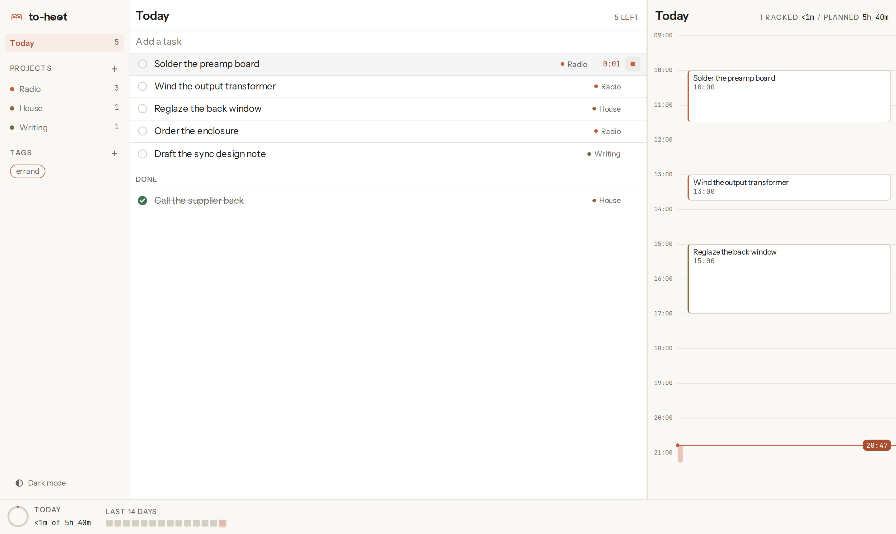
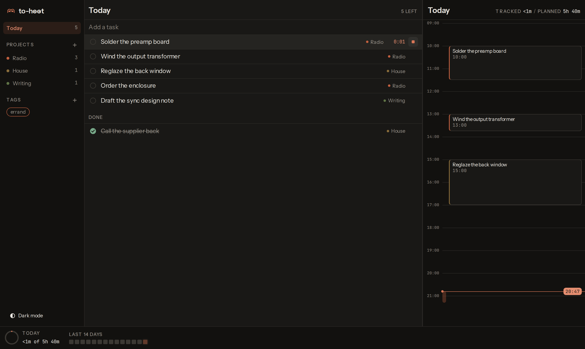
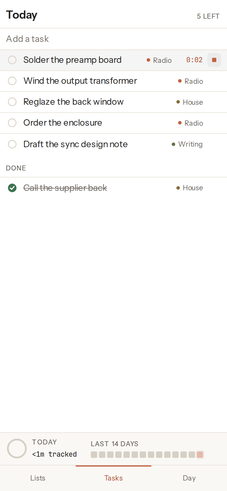
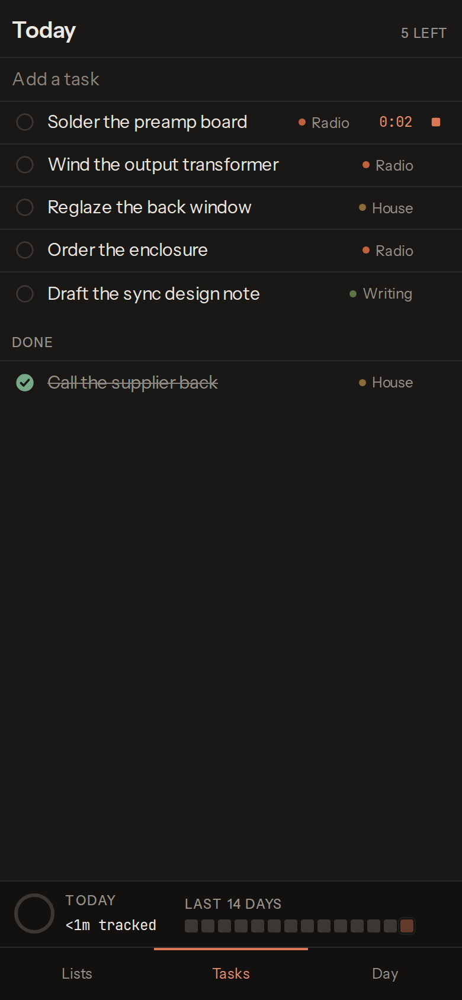

A task list that tracks time against the day you actually had. One list on your Linux desktop and your Android phone, synced through a private repository you own.
Download for Android Download for Linux
The AppImage runs anywhere: chmod +x and go. A .deb is on the
releases page, and
both are built on Ubuntu 22.04 so they run on older systems too.




What it is for
Four things it does, and nothing else
- One list on every device.
- The same tasks on the desktop and on the phone, without an account with anyone. Both devices append to one log and both replay it, so a change made offline on one lands on the other whenever it next reaches the network.
- Time tracked against your real calendar.
- The day view puts what you tracked next to what was already in your calendar, in the same column. Tracked time is written back to a separate calendar, so a week of work is visible where the rest of your commitments are and your real calendars are never touched.
- Your data in your own private repository.
-
An append-only event log in a private GitHub repository you own, as plain JSON you
can read with
cat. There is no server in the middle and nothing to export from, because it was never anywhere else. - Ask Claude to add a task from anywhere.
- An MCP server offers the same nine tools the app uses. A task Claude adds is one event appended to the log, indistinguishable from one you typed.
What it costs
Nothing, and there is nowhere to enter a card
Every service in the stack has a free tier that stops working when you exceed it rather than starting to bill you. There is no paid plan to be upgraded onto, because there is no hosted service: what runs is running in your accounts.
| Service | What it does here | Free tier | At the limit |
|---|---|---|---|
| GitHub Free | Holds your private data repository | Unlimited private repositories | 403 with Retry-After |
| GitHub Actions | Builds the releases | Unmetered on public repositories | Not applicable |
| GitHub Releases | Hosts the downloads above | Unmetered bandwidth, 2 GiB a file | Not applicable |
| Apps Script and Calendar API v3 | The calendar bridge, in your account | Free, with no billing account | Quota error |
| Cloudflare Workers Free | Optional MCP endpoint for Claude on the web | 100,000 requests a day on workers.dev |
HTTP error, never a bill |
| Sideloaded APK | Installing it on your phone | No Play Console account | Not applicable |
Set up
Four steps, and only the first one is required
The app walks through these as a first-run wizard you can resume or skip, and every step ends in a Test connection button that makes a real call and reports the actual error. This is the same sequence, so the page and the app cannot disagree.
-
Local only
Install it and use it. Tasks, projects, tags, timers and the day view all work with no accounts at all. If a local task tracker is what you wanted, you are done.
-
Sync
Paste a GitHub fine-grained token with Contents read and write on one repository. The app offers to create the private data repository for you, writes a commit and reads it back before saying it worked, then asks you to name the device.
-
Calendar
Optional. The app gives you the complete Apps Script source and a generated secret; you paste them into a new project in your own Google account, enable the Calendar service, deploy it as a web app, and paste the URL back. A secret calendar address in ICS format is the read-only shortcut if you do not need write-back.
-
Claude
Optional. One command registers the local MCP server with Claude Code. For Claude on the web, deploy the Cloudflare Worker to your own free account and add the URL as a custom connector. Skipping this changes nothing else.
The long version, with the exact clicks and what each error means.
Build from source
For anyone who will not run a binary someone else compiled
Node 22 and npm 10 or newer. The tests run on a fresh clone with no build step first.
git clone https://github.com/danieltyukov/to-hoot.git
cd to-hoot
npm ci
npm test
npm run build
That builds the web application, which is the whole app. The desktop and mobile targets
are shells around it, each built separately because the Tauri and Capacitor CLIs both
want a flat node_modules:
cd apps/desktop && npm install && npm run build
cd apps/mobile && npm install && npm run apk:debugNo keystore is needed to build: debug builds sign themselves, and a release build with no signing material stays unsigned rather than failing. CONTRIBUTING has the toolchain package list and how to run each suite.